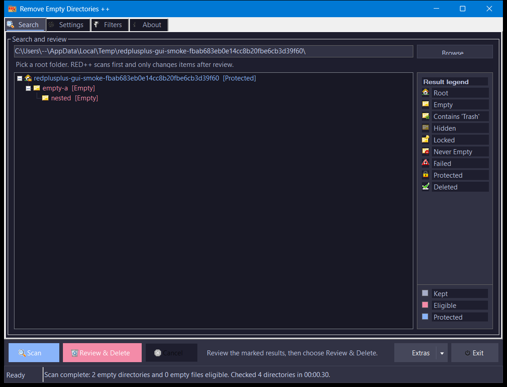

One might think that searching and deleting empty directories is a trivial thing, but once you have hundreds of them it get's really exhausting. That's the reason I [Jonas John] made RED. It’s a small and simple tool that searches and deletes empty directories recursively below a given start folder. And before deleting anything it let’s you check all empty directories it found.
Features:
Remove Empty Directories ++ (aka RED++) finds, displays, and deletes empty directories recursively below a given start folder. It allows you to create custom rules and filters for keeping and deleting folders (e.g. ignore directories called RECYCLER, treat directories with empty files as empty etc).
Shows empty directories before deleting them
Supports multiple delete modes (Recycle Bin, Direct, Simulate, and Move to folder)
User configurable filters to control directory processing
Filter rules can be enabled / disabled as required
Can treat directories with empty files as empty and can optionally remove standalone zero-byte files
One-click restore of previous deletion runs from the More menu
.redkeep marker files protect a directory and its subtree wherever it is copied
Optional MFT turbo scan for NTFS/ReFS volumes when running as administrator
Headless command-line mode for scheduled or scripted scans
Portable, self-contained release with no runtime installer
RED++ is an enhanced version of Jonas John's Remove Empty Directories (aka RED). I [NotBob] found RED very useful over the years, but I wanted a little bit more. Jonas hadn't updated RED in over 4 years and was unresponsive to email contact. And so RED++ was created.
RED++ is not a rewrite. It uses much of the same source code as the original RED but has had the settings, filter matching and filter editing portions rewritten. This was done to:
Provide more flexible matching rules (Contains, Endswith, Startswith, Exact etc)
To allow rules to be selectively enabled / disabled
To make it portable
System Requirements
Windows 10 22H2, Windows 11, or Windows Server 2022/2025
No separate runtime install is required. The release bundles .NET 10.
There is no installer. Unzip into a folder of your choice and run RED+.exe.
You Use This Software Entirely At Your Own Risk!
I've been using versions of the original RED for many years, and this enhanced RED++ since July 2024 with no significant issues. But I offer no guarantee that it will work for you on your system.
The Search screen is where you choose the scan target, review results, and decide what should be removed.
Results appear in a review list with status and reason details, so protected, ignored, failed, deleted, and deletion-ready entries can be checked before any destructive action.

The Main Search Screen Showing the Results of a Search